1.可折叠，携带方便 2.使用距离传感器替代传统IR对射，减少体积 3.全32K完整按键 4.带有一个OLED屏幕，可自定义文字内容 5.适配多种输入方式，键盘／HID／串口 6.可保存3个卡号在手台内，方便快速切换账号 7.键盘模式下全32K按键及IR可重映射，并可保存3种预设 8.6个虚拟天键位置可软件调节，并保存3种预设 9.RGB灯效可自定义，可选择游戏接管或手台接管 10.全部设置可保存至闪存，断电不丢失 11.配套上位机软件，即插即用 12.带有5.1K下拉电阻，支持C2C连接线
手台支持三种与游戏通信的方式，键盘模式请自行修改SegaTools以应对，HID模式兼容yubideckio与chuniio-mux，串口模式兼容游戏原生串口，请自行调整端口号至COM1。
请在打开手台时注意两侧定位卡扣，不要暴力打开。
手台数据传输量大，请选择优质Type-C线，保证游玩时不会出现延迟和断联问题。
请于手台右上角的Type-C插口将手台于电脑连接。启动时将会展示启动Logo并将初始化进度于LED呈现。
手台第一次开机会进行自检及相关设置，启动时间较长请等待。 之后开机时间将缩短。
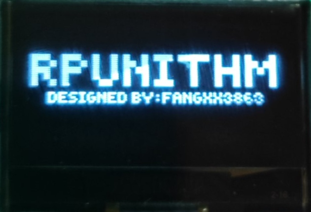
开机完成后右侧屏幕会进入主菜单，通过拨动下方的方向键可以切换当前行与列。
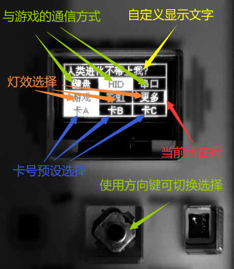
方向键继续下翻可以进入第二菜单。
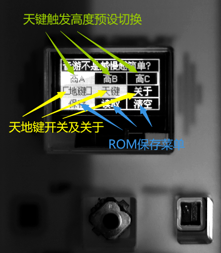
有许多选项具备二级菜单，竖直按下方向键可进入。
将光标切换至键盘选项，按下方向键进入键盘配置。
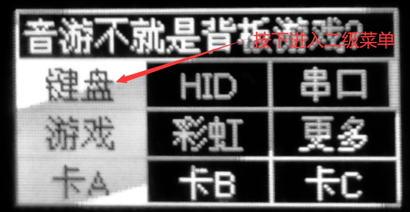
此时将会出现三个地键预设供你选择，使用上下方向键切换，按下即可设置。向右拨方向键可进入天键预设选择，使用上下方向键切换，按下即可设置，左拨返回地键设置。
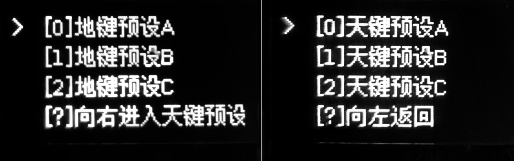
这三个预设的键值可通过上位机修改，下载提供的上位机软件，点击查找设备，当看到操作日志中出现“设备连接成功.”表示上位机以与手台建立连接。
·注意· 上位机与游戏本体不可同时运行
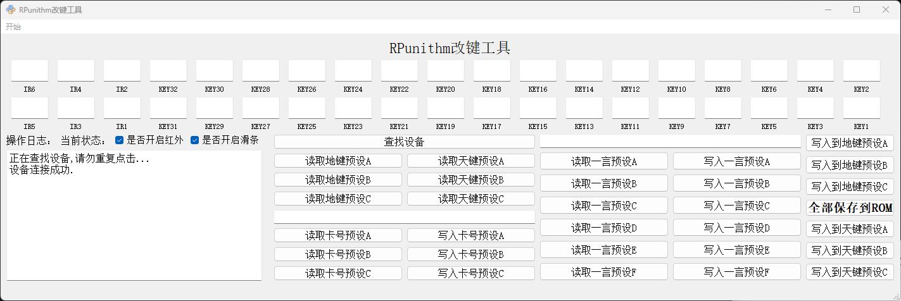
在上位机左侧的位置是用于读取手台保存的三个键位预设，按下后会将手台内存中的键位读取至上方框中。
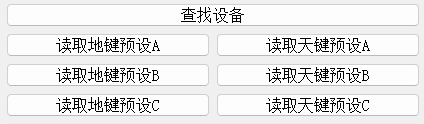
例如，按下“读取地键预设A”。
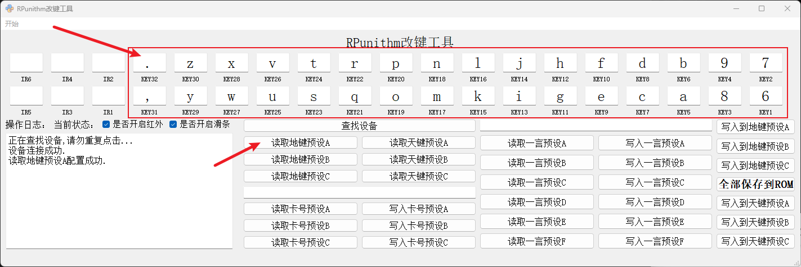
接着，就可以对键值进行修改，键值仅限ACSII字符，不可使用“Caps”“Shift”“Ctrl”等按键。如果不需要使用某个按键，请将其留空。
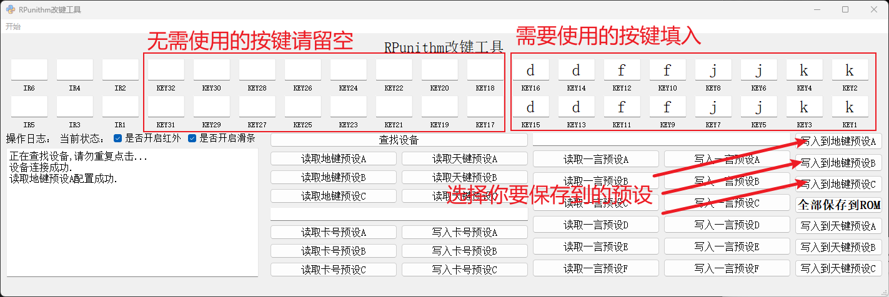
修改完成后请点击“写入到地键预设X”，程序将会将键值写入到对应预设。
·注意· 写入预设仅会将修改内容写入至内存，断电丢失，请全部操作完成后点击“全部保存到ROM”，此时按键预设将会保存至闪存，断电不会丢失。
同理，天键键值预设的修改也与地键键值预设的修改操作逻辑一致，在此不赘述。
将光标切换至串口选项，按下方向键进入串口配置。
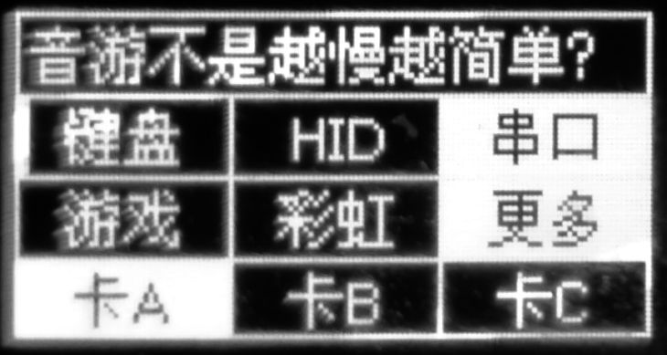
此时将会出现三个天键预设供你选择，使用上下方向键切换，按下即可设置。
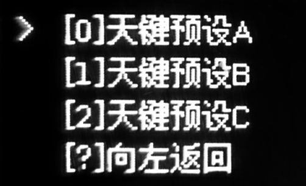
这三个预设的键值可通过上位机修改，下载提供的上)位机软件，点击查找设备，当看到操作日志中出现“设备连接成功.”表示上位机以与手台建立连接。天键与地键的设置逻辑基本相同。
按下“读取天键预设X”即可将手台内存中的键位读取至上方框中。
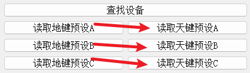
这里我以“读取天键预设B”为例。按下后出现“读取天键预设B配置成功.”即代表读取成功，键位将显示于上方。
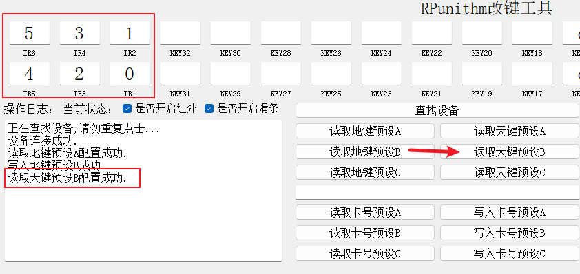
修改键值后，点击写入地键预设即可保存。
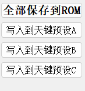
·注意· 写入预设仅会将修改内容写入至内存，断电丢失，请全部操作完成后点击“全部保存到ROM”，此时按键预设将会保存至闪存，断电不会丢失。
仅HID与串口模式支持与游戏同步灯光。
切换至“更多”选项按下即可配置按键灯光。
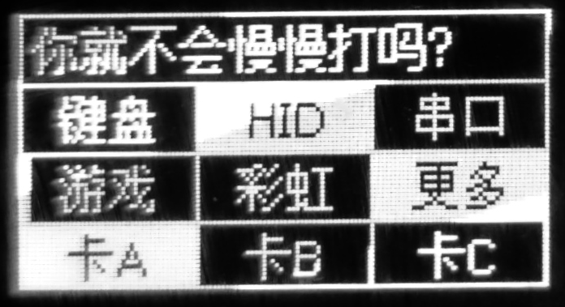
按下后将出现灯光预设供你选择。使用上下方向键切换，按下选择。
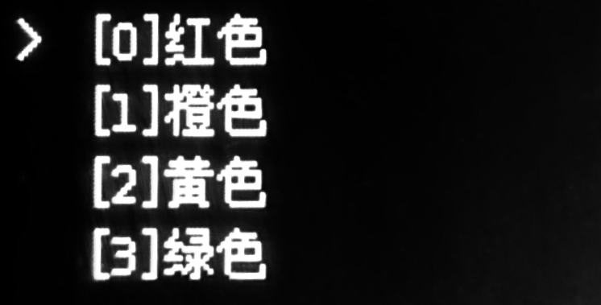
卡片切换仅在HID模式可用。手台能够保存三个卡片预设，以便您快速切换账号。
在游戏主界面时，将手台拨至想要的卡片，长按即可刷卡。
卡片预设将会在第一次开机时随机生成，若想修改为自己的卡片，请到上位机设置。
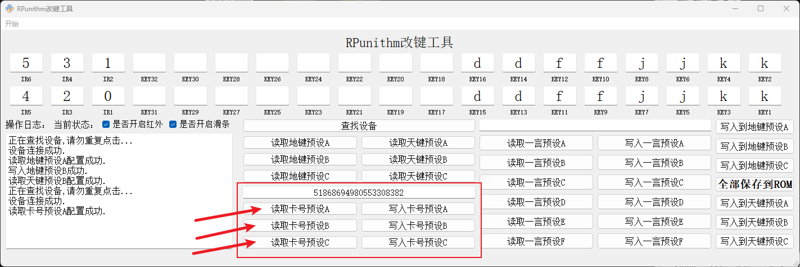
将您的20位ACCESSCODE复制到此处按下写入卡号预设即可。20位卡号可以在游戏主页面右侧点击获取，也可于DEVICE/aime.txt或者DEVICE/felica.txt中获取。
向下滚动到菜单第二页第一行即可切换天键预设。
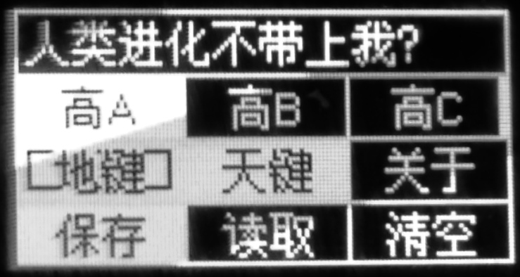
按下方向键即可进入此预设的配置窗口。配置窗口与传统天键的对应关系如图。
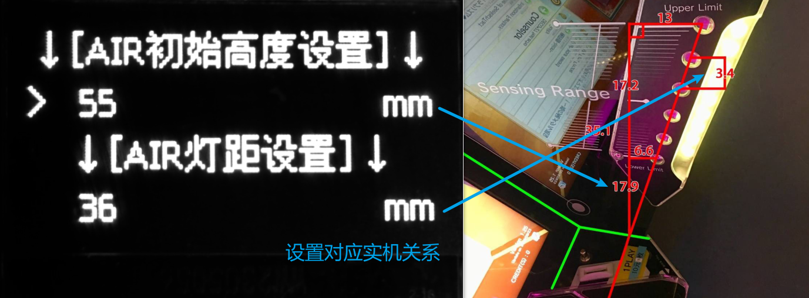
本选项可以单独打开或关闭天键或地键。
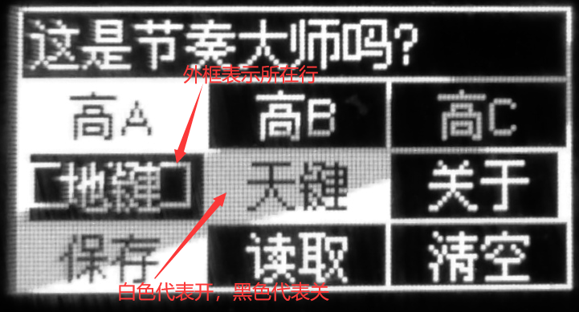
本选项按下会显示本手台的版本号及其他信息。
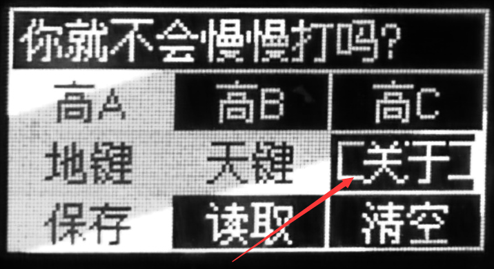
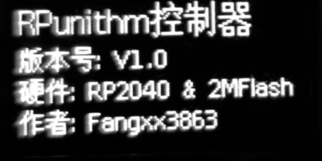
所有设置完成后如果想断电不丢失，请按下保存，如果乱设置错误了，请按下清空。
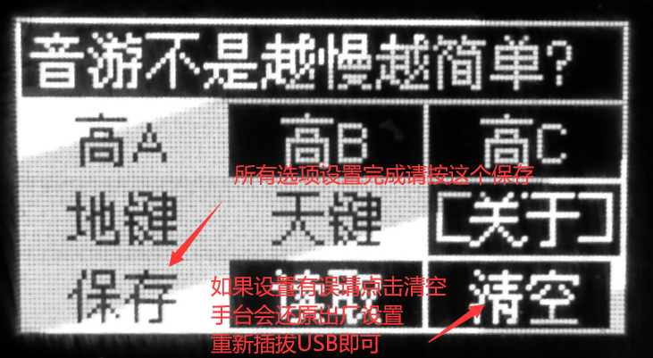
主页面上方的自定义文本会在每次操作后随机从6个预设中抽取一个显示。
预设文字可使用上位机调整，操作流程相同。
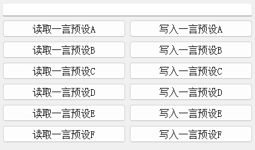
·注意· 写入预设仅会将修改内容写入至内存，断电丢失，请全部操作完成后点击“全部保存到ROM”，此时预设将会保存至闪存，断电不会丢失。
1.拔掉USB线 2.按住右侧上方按钮并插入USB线 3.电脑此时会出现一个RPI-RP2的磁盘驱动器 4.将固件文件直接复制粘贴到这个磁盘驱动器的根目录，升级完成后手台将会自动重启